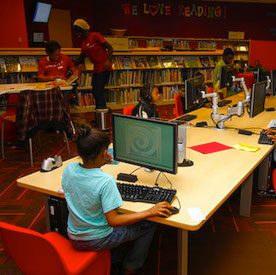
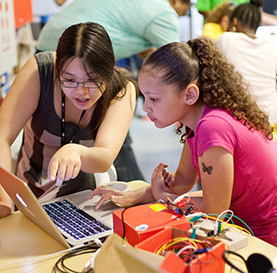

Gigabit Community Fund
Learning on tomorrow's networks
Learning on tomorrow's networks
Next-gen networks create new opportunities for everyone in our communities. Mozilla's Gigabit Community Fund is an effort to create innovative learning experiences and workforce development opportunities on the networks of the future. Learners will engage in new ways through immersive educational environments, new collaboration and sharing tools, and other possibilties enabled by higher bandwidth networks in Chattanooga and Kansas City.
Support for the future
$300,000 will be available to support development and experimentation with education and workforce development focused uses of emerging technologies. We will enable pilots of new and existing applications with institutions in Gigabit cities.
Additional funding will support community building activities led by a local Mozilla team to foster a collaborative community of practice in both Kansas City and Chattanooga. We want to help these communities become "living labs" for experimentation and development of public benefit uses of these technologies.
Out of the lab
The project follows the Mozilla Ignite Apps Challenge program, which generated 22 gigabit app prototypes. The fund will bring discoveries out of the lab and into the field, creating a community of practice in education and workforce development in the physical communities of Kansas City and Chattanooga. The program supports the national efforts of our partners at the National Science Foundation and US Ignite. It also seeks to draw on the larger expertise and drive of Mozilla’s mission to empower users on a web that is open, accessible, and is a platform for innovation for everyone.